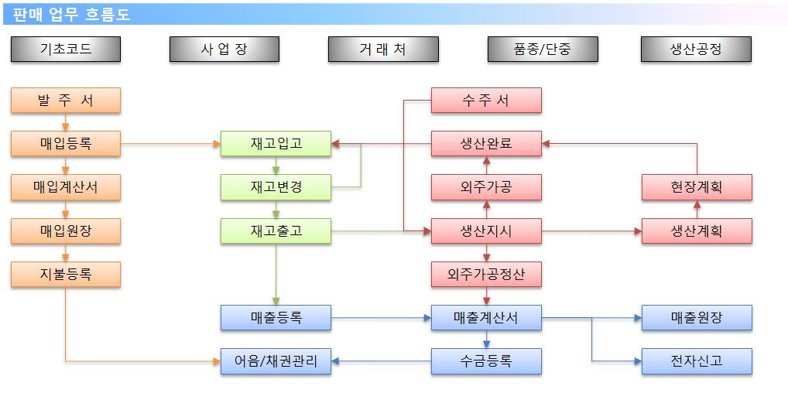
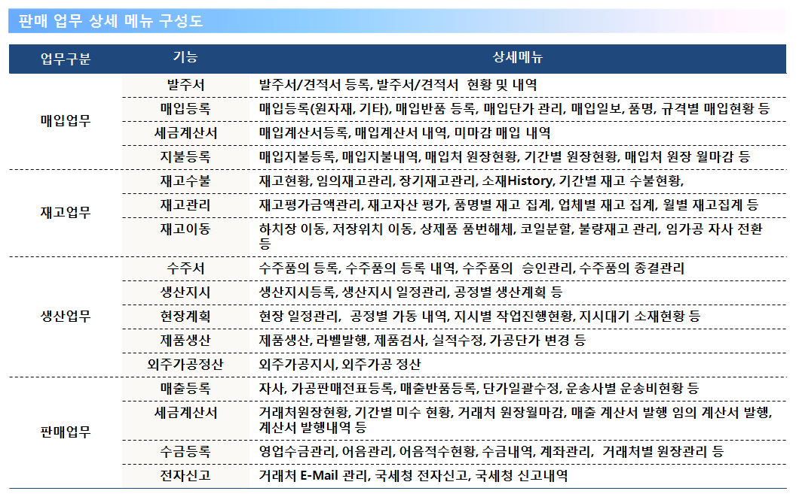

다년간의 코일센터 프로젝트 경험을 바탕으로 철강제조 기업의 환경에 최적화된 ERP 솔루션으로 다양한 업무처리, 부서간의 데이터 공유, 일원화된 업무처리를 위한 철강제조 기업의 맞춤형 솔루션 입니다.
목적
영업, 생산, 제품, 인사, 회계 관리 업무의 중앙 집중적인 정보 자원의 관리를 통해 세분화된 제품 원가분석, 정확한 재고정보, 현장과 사무실의 업무효율의 극대화를 통해 이익 증진을 기대 할 수 있습니다.
개요
기초정보 관리 : 사업장, 거래처, 하치장, 철강품종, 생산공정, 단중관리 등 시스템 사용의 전반적인 기초업무.
매입업무 관리 : 발주서, 매입등록, 매입 세금 계산서, 지불등록, 원장관리 등.
재고업무 관리 : 재고수불, 제품변경, 재고이동 업무 등.
생산업무 관리 : 수주등록, 생산지시, 생산계획, 현장계획, 제품생산, 외주가공정산 관리 등.
판매업무 관리 : 매출등록, 매출 세금 계산서, 수금등록, 계산서 전자신고, 원장관리 등.


※ 거래처별, 규격별 단가 관리가 가능합니다.
※ 견적, 발주, 수주 관리로 매입, 매출 단계별 진행 관리가 됩니다.
※ 담당자별 매입, 생산, 매출 집계 내역 지원합니다.
※ 계산서 등록 관리를 통한 전자세금계산서 자동 발행 지원 됩니다.
※ 생산에 따른 현장 계획 관리 및 현장 생산 설비 진행 현황을 확인 할 수 있습니다.
※ 생산 투입 대비 생산 완료 및 원가 대비 이익율 현황 집계표를 지원합니다.
※ 외주 생산 및 외주 가공에 대한 외주 가공비 정산 지원이 가능합니다.
※ 제품 LOT 관리로 제품 입고, 생산, 변경, 판매 내역을 한 화면에서 확인 가능 합니다.
※ 매입, 매출 거래처에 따른 월별, 기간별, 년도별 집계 내역을 지원합니다.
적용사례
■ 판매업무
■ 생산업무
■ 집계 그래프
■ 영업 거래처 정보
지문인식 관리 : O/T사전등록, 일일출퇴근 관리, 근태정보 현황 등.
근태업무 관리 : 일근태 관리, 일근태 결재 관리, 월근태관리, 일/월 별 근태 현황, 잔업시간 승인 등.
급여업무 관리 : 급여 기본사항 관리, 급여 변동사항 관리, 기간별 공제내역, 근로 계약서 등.
퇴직업무 관리 : 퇴직금 지급내역, 퇴직충당금 내역관리 등.

※ 사업장의 급여 체계에 맞게 기준 변경이 가능 합니다.
※ 출퇴근 관리를 지문인식과 연동하여 간편한 근태마감 및 자동 급여 계산이 지원됩니다.
※ 급여 데이터 관리로 회사에 맞는 퇴직금 정산이 가능합니다.